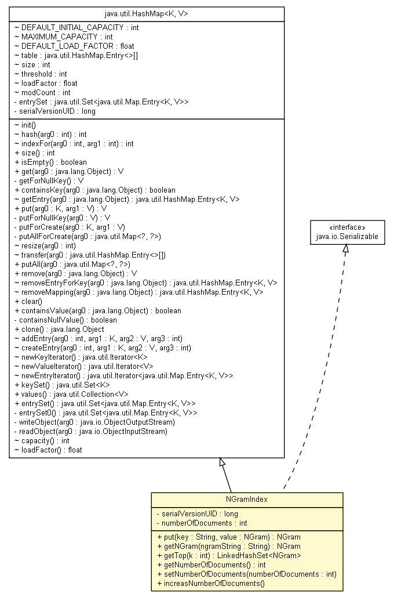

tud.iir.classification.page
Class NGramIndex

java.lang.Object
 java.util.AbstractMap<K,V>
java.util.HashMap<java.lang.String,NGram>
tud.iir.classification.page.NGramIndex
java.util.AbstractMap<K,V>
java.util.HashMap<java.lang.String,NGram>
tud.iir.classification.page.NGramIndex
- All Implemented Interfaces:
- java.io.Serializable, java.lang.Cloneable, java.util.Map<java.lang.String,NGram>
public class NGramIndex
- extends java.util.HashMap<java.lang.String,NGram>
- implements java.io.Serializable
- See Also:
- Serialized Form
| Nested classes/interfaces inherited from class java.util.AbstractMap |
java.util.AbstractMap.SimpleEntry<K,V>, java.util.AbstractMap.SimpleImmutableEntry<K,V> |
| Methods inherited from class java.util.HashMap |
clear, clone, containsKey, containsValue, entrySet, get, isEmpty, keySet, putAll, remove, size, values |
| Methods inherited from class java.util.AbstractMap |
equals, hashCode, toString |
| Methods inherited from class java.lang.Object |
finalize, getClass, notify, notifyAll, wait, wait, wait |
| Methods inherited from interface java.util.Map |
equals, hashCode |
serialVersionUID
private static final long serialVersionUID
- See Also:
- Constant Field Values
numberOfDocuments
private int numberOfDocuments
NGramIndex
public NGramIndex()
put
public NGram put(java.lang.String key,
NGram value)
- Specified by:
put in interface java.util.Map<java.lang.String,NGram>- Overrides:
put in class java.util.HashMap<java.lang.String,NGram>
getNGram
public NGram getNGram(java.lang.String ngramString)
getTop
public java.util.LinkedHashSet<NGram> getTop(int k)
getNumberOfDocuments
public int getNumberOfDocuments()
setNumberOfDocuments
public void setNumberOfDocuments(int numberOfDocuments)
increasNumberOfDocuments
public void increasNumberOfDocuments()